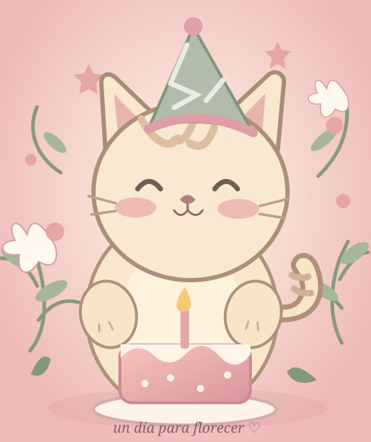

✦ un rinconcito hecho con amor ✦
Hoy celebramos a alguien muy especial
¡Feliz
cumpleaños!
Que hoy te abracen las flores, las risas y todos los sueños que todavía no han llegado.
con cariño, alguien que te quiere mucho ♡

Las cosas bonitas que nos unen
Cada encuentro, cada risa y cada conversación tienen un lugar aquí.
Este pequeño jardín digital está lleno de recuerdos, palabras bonitas y sorpresas hechas especialmente para ti.
de mí, para ti ♡Momentos que quiero guardar
Una colección de instantes que merecen quedarse para siempre.
✿ Estas postales ilustradas esperan tus fotos favoritas. Cada recuerdo merece su lugar.
El club de las amigas
Hay amistades que son un lugar seguro y otras que, además, son una aventura. Toca una tarjeta ♡
Confesiones entre flores
Lo que a veces no decimos en voz alta, pero merece ser contado.
UN RINCONCITO PARA ESCRIBIR
¿Tú también tienes algo bonito que decir?
Escríbelo y aparecerá en este navegador. No se envía a ningún servidor.
Palabras que abrazan
Algunas cartas no se guardan en un sobre: se guardan en el corazón. Haz clic para leerlas.
Antes de soplar, pide un deseo
Una velita hecha con amor, solo para ti. Sopla tres veces para descubrir una sorpresa.
Cierra los ojos y piensa en tu deseo…
¡Deseo enviado al universo!
Un jardín de buenos deseos
Escoge una flor. Cada una trae un mensaje para tu nuevo año.
Haz clic en una de las flores para descubrir tu deseo.
✧LA PRÓXIMA CELEBRACIÓN
Nuestra cuenta regresiva
La magia de este cumpleaños empieza hoy, y sus recuerdos duran todo el año.
Que la música no pare ♫
Hay canciones que suenan a una persona, a una tarde, a un abrazo. Aquí puedes guardar las que cuentan su historia.
Tres melodías originales para acompañar este cumpleaños. ♡ Pulsa ▶ para escucharlas.
¿Cuánto sabes de nosotras?
Siete preguntas bonitas para celebrar, reírte y descubrir una sorpresa final.